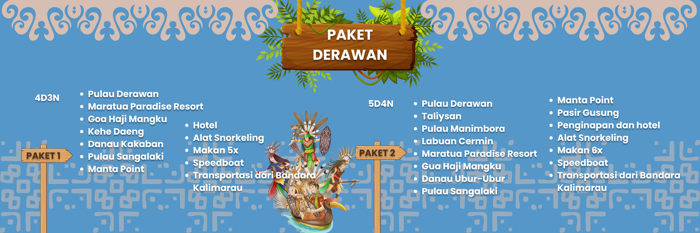

Kepulauan Derawan di Kabupaten Berau, Kalimantan Timur, menawarkan berbagai wisata bahari dan pesisir yang menarik, seperti snorkeling dan menyelam, berenang bersama ikan hiu paus, menjelajahi pulau-pulau, menikmati matahari terbit dan terbenam.
Pulau Derawan di Kabupaten Berau, Kalimantan Timur, memiliki banyak objek wisata, di antaranya:
1. Pantai: Bermain di pantai berpasir putih
2. Snorkeling: Berenang bersama ikan pari raksasa di Manta Point
3. Menyelam: Menyelam di taman laut yang populer di kalangan wisatawan mancanegara
4. Menonton matahari terbenam: Menyaksikan matahari terbenam dari dermaga panjang yang menjorok ke laut
5. Menonton penyu bertelur: Melihat penyu bertelur di Pulau Sangalaki
6. Bersepeda: Menyewa sepeda untuk berkeliling pulau
7. Berkunjung ke pulau-pulau lain: Berkunjung ke pulau-pulau lain seperti Pulau Maratua, Kakaban, dan Sangalaki
8. Whale Shark Point: Berenang bersama ikan hiu paus di Whale Shark Point yang berjarak sekitar 30 menit dari pulau Derawan .
Untuk menuju Pulau Derawan, Anda bisa menggunakan jalur udara atau jalur darat. Jalur udara bisa ditempuh dengan penerbangan langsung dari Jakarta ke Balikpapan, kemudian dilanjutkan ke Pelabuhan Tanjung Batu dengan speed boat. Jalur darat bisa ditempuh dari Tarakan, kemudian dilanjutkan menuju Pelabuhan Tengkayu dan disambung lagi menuju kawasan pulau dengan menggunakan speed boat.

| Harga | Jumlah |
|---|---|
| Rp. 7.000.000/Px | 15 Px |
| Rp. 7.150.400/Px | 10 Px |
| Rp. 7.250.000/Px | 5 Px |
| Rp. 7.500.000/Px | 4 Px |
| Rp. 7.650.000/Px | 3 Px |
| Rp. 7.700.000/Px | 2 Px |